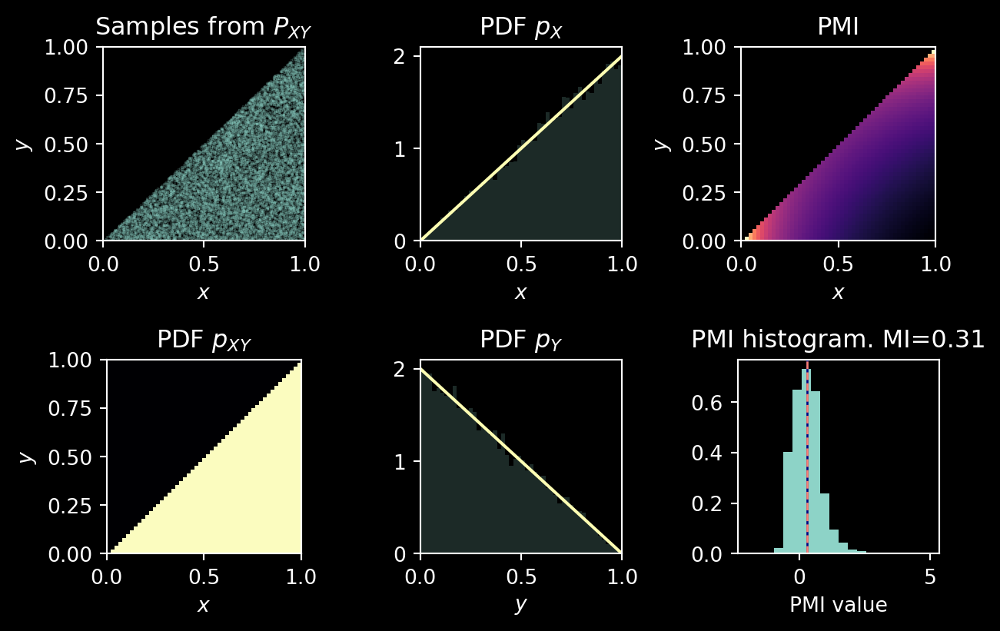

Code
from typing import Protocol
import matplotlib.pyplot as plt
import numpy as np
plt.style.use("dark_background")
class Distribution(Protocol):
def sample(self, rng, n_samples: int) -> np.ndarray:
pass
def p_xy(self, x: np.ndarray, y: np.ndarray) -> np.ndarray:
pass
def p_x(self, x: np.ndarray) -> np.ndarray:
pass
def p_y(self, y: np.ndarray) -> np.ndarray:
pass
def pmi(self, x: np.ndarray, y: np.ndarray) -> np.ndarray:
pass
@property
def mi(self) -> float:
pass
class UniformJoint(Distribution):
def sample(self, rng, n_samples):
samples = rng.uniform(low=1e-9, size=(3 * n_samples, 2))
samples = np.asarray(list(filter(lambda point: point[1] < point[0], samples)))
if len(samples) < n_samples:
samples = self.sample(rng, n_samples)
assert len(samples) >= n_samples
return samples[:n_samples, ...]
def p_xy(self, x, y):
return np.where(y < x, 2.0, 0.0)
def p_x(self, x):
return 2*x
def p_y(self, y):
return 2*(1-y)
def pmi(self, x, y):
return np.where(y < x, -np.log(2*x*(1-y)), np.nan)
@property
def mi(self):
return 0.307
def visualise_dist(
rng,
dist: Distribution,
n_samples: int = 15_000,
) -> plt.Figure:
fig, axs = plt.subplots(2, 3, figsize=(3*2.2, 2*2.2))
samples = dist.sample(rng, n_samples=n_samples)
t_axis = np.linspace(1e-9, 1 - 1e-9, 51)
X, Y = np.meshgrid(t_axis, t_axis)
# Visualise joint probability
ax = axs[0, 0]
ax.scatter(samples[:, 0], samples[:, 1], rasterized=True, alpha=0.3, s=0.2, marker=".")
ax.set_xlim(0, 1)
ax.set_ylim(0, 1)
ax.set_title("Samples from $P_{XY}$")
ax.set_xlabel("$x$")
ax.set_ylabel("$y$")
ax = axs[1, 0]
ax.imshow(dist.p_xy(X, Y), origin="lower", extent=[0, 1, 0, 1], cmap="magma")
ax.set_title("PDF $p_{XY}$")
ax.set_xlabel("$x$")
ax.set_ylabel("$y$")
# Visualise marginal distributions
ax = axs[0, 1]
ax.set_xlim(0, 1)
ax.hist(samples[:, 0], bins=np.linspace(0, 1, 51), density=True, alpha=0.2, rasterized=True)
ax.plot(t_axis, dist.p_x(t_axis))
ax.set_xlabel("$x$")
ax.set_title("PDF $p_X$")
ax = axs[1, 1]
ax.set_xlim(0, 1)
ax.hist(samples[:, 1], bins=np.linspace(0, 1, 51), density=True, alpha=0.2, rasterized=True)
t_axis = np.linspace(0, 1, 51)
ax.plot(t_axis, dist.p_y(t_axis))
ax.set_xlabel("$y$")
ax.set_title("PDF $p_Y$")
# Visualise PMI
ax = axs[0, 2]
ax.set_xlim(0, 1)
ax.set_ylim(0, 1)
ax.imshow(dist.pmi(X, Y), origin="lower", extent=[0, 1, 0, 1], cmap="magma")
ax.set_title("PMI")
ax.set_xlabel("$x$")
ax.set_ylabel("$y$")
ax = axs[1, 2]
pmi_profile = dist.pmi(samples[:, 0], samples[:, 1])
mi = np.mean(pmi_profile)
ax.set_title(f"PMI histogram. MI={dist.mi:.2f}")
ax.axvline(mi, color="navy", linewidth=1)
ax.axvline(dist.mi, color="salmon", linewidth=1, linestyle="--")
ax.hist(pmi_profile, bins=np.linspace(-2, 5, 21), density=True)
ax.set_xlabel("PMI value")
return fig
rng = np.random.default_rng(42)
dist = UniformJoint()
fig = visualise_dist(rng, dist)
fig.tight_layout()